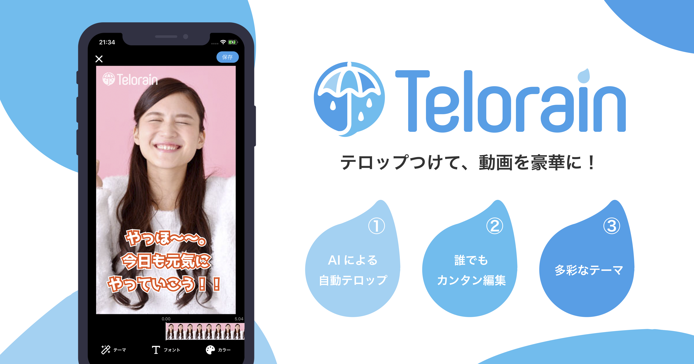
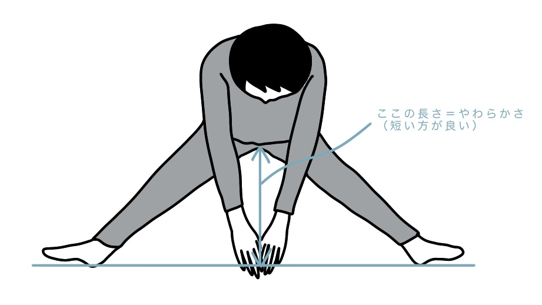
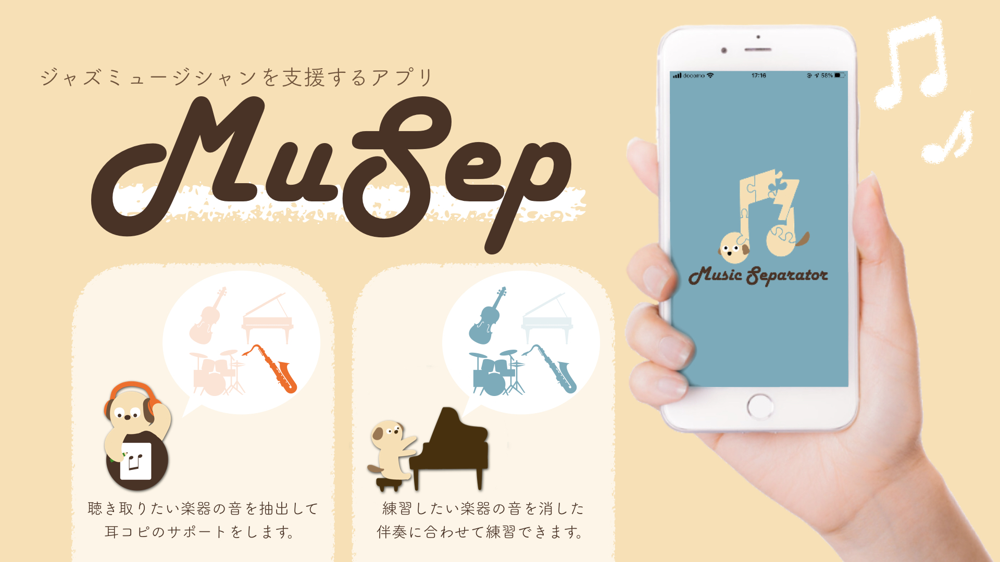
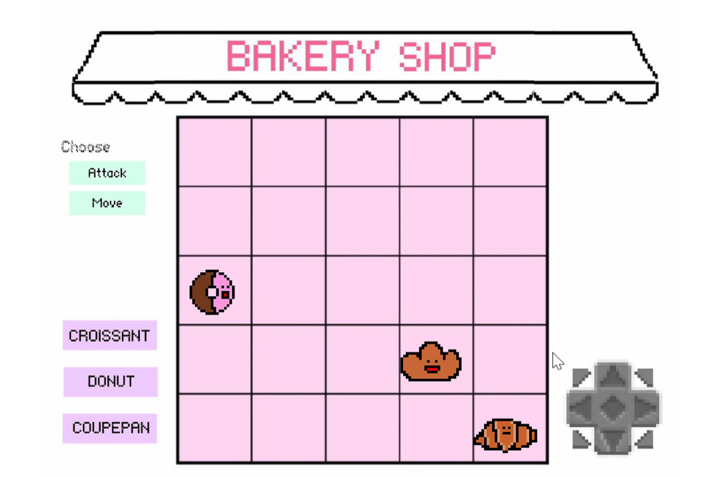

Profile
Seven Sounds Jazz Orchertra，Edel Röte Jazz Orchesterにてジャズピアノを演奏していました．
栄にあるジャズバーThe Wizさんでもソロやバンドで演奏経験があります．
楽器演奏の他にもイラストを描いたり裁縫をしたりなど，ものづくり全般が好きです．
つくったものや，得た知見をイラストにまとめたものなどはInstagramにあげています．
Product

- Telorain
未踏事業にて同期が開発していたTelorainのiOSエンジニアとして途中から開発に参加．吹き出しのテーマを作ったりなどしています．
β版を配布しているのでぜひこのフォームからお試しください．
特設サイトはこちら．

バックエンドの勉強をしたいなと思い，せっかくなら自分の興味あるものを作ってみようと開発したものです．（制作途中）
Go言語を使用しています．

支援アプリ - MuSep
曲からドラムの音だけ・ピアノの音だけといったように，特定の楽器を抜き出す音源分離技術を研究し，それを取り入れたiOSアプリ「MuSep（ミューゼップ）」を開発しました．
音源分離技術には機械学習（Python）を用いています．こちらのアプリは2019年度の未踏事業に採択され開発しました．
またSXSW Trade Showにて展示予定でしたがコロナで延期になりました．特設サイトはこちら．

絵描き歌自動生成システム
絵を描くことに対して苦手意識を持つ人が気軽に絵を練習できる方法として絵描き歌を提案し，ユーザの用意した任意の画像から絵描き歌を自動で生成するシステムを開発しました．
研究室メンバーの4人チームで開発を行い，私は第一著者として活動を行いました．
本システムに関する論文は情報処理学会論文誌の推薦論文に選出されました．

学部2年時に配属される研究室の選抜課題にて制作したゲームです．C++とDxlibで開発しました．
ランダム攻撃のCPUに加え，人工知能も搭載しました．
Carrer
| 2009/04 - 2012/03 | 愛知教育大学附属名古屋中学校 |
| 2012/04 - 2015/03 | 名古屋市立向陽高校 |
| 2015/04 - 2019/03 | 中京大学 情報工学科（濱川研究室） |
| 2019/04 - 2021/03 | 中京大学大学院 工学研究科 情報工学専攻 卒業予定（濱川研究室） |
Media
| 2020/04/?? | 中京大学 学長賞受賞（取材がコロナにより延期） |
| 2020/04/07 | YouTube 2020年2月15日／16日開催 2019年度（第26回）未踏IT人材発掘・育成事業 成果報告会（プレゼン動画掲載） |
| 2020/03/19 | IPA news Vol.45 未踏事業 成果報告会を開催！（プレゼン写真掲載） |
| 2020/03/13 | JCS オンライン開催に踏み切った「未踏会議2020」が大盛況でした！（写真掲載） |
| 2020/03/02 | METI journal 奇才を育み20年 PFN西川社長と竹内東大名誉教授が語る「未踏」 （プレゼン写真掲載） |
| 2020/01/08 | 中日新聞「Ｚ世代」の挑戦 ＩＴ活用、自然体で「好き」を追求 |
| 2019/12/26 | FM愛知 ラジオ番組 C・Tech FUTURE GENERATION |
| 2019/12/05 | 中日新聞 米国見本市 県が学生派遣 |
| 2019/10/10 | 中京大学 工学部／アメリカで行われる大規模展示会への選定審査会を突破 |
| 2019/04/23 | 中京大学 在学生・卒業生の声 |
Love Skills
| ♡♡♡ | Python, Swift, Photoshop, Illustrator, Arduino |
| ♡♡ | HTML, CSS, Go |
| ♡ | Java, Unity, C#, JavaScript, VisualBasic, Git, BASIC |